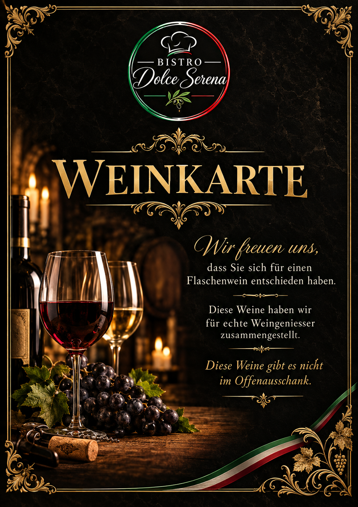

Pizza
Traditionelle italienische Pizza mit ausgewählten Zutaten und der persönlichen Handschrift von Marcello.
Italienische Küche, Pizza und Pasta – mit echter Leidenschaft, familiärer Atmosphäre und einem Stück Geschichte aus Lottstetten.
Im Bistro Dolce Serena verbinden sich italienische Küche, Handwerk und die herzliche Atmosphäre eines Hauses mit Geschichte.
Traditionelle italienische Pizza mit ausgewählten Zutaten und der persönlichen Handschrift von Marcello.
Spaghetti, Penne und Lasagne – italienische Klassiker, frisch und mit viel Liebe zubereitet.
Ein Ort zum Ankommen, Genießen und Zusammensitzen – ganz nach italienischer Art.
Entdecken Sie unsere italienischen Spezialitäten.
Unsere aktuelle Takeaway-Falzkarte – inklusive unserer Familien-Pizza.
Unsere Getränkekarte und – vorerst – das Deckblatt unserer Weinkarte. Die vollständige Weinkarte folgt später.
Unsere aktuelle Getränkekarte.
Getränkekarte öffnen
Das Deckblatt unserer Weinkarte. Das vollständige Angebot folgt später.
Weinkarte ansehenEin Ort mit Geschichte und eine Leidenschaft, die über viele Jahre gewachsen ist.

Seit mehr als vier Jahrzehnten steht Marcello Cogoni für italienische Küche, echtes Handwerk und die Leidenschaft für gute Pizza.
Das Bistro Dolce Serena verbindet diesen Ort und seine Geschichte mit einem neuen Kapitel – mit neuer Energie und doch mit der alten, vertrauten Leidenschaft.
Wir freuen uns auf Ihren Besuch im Bistro Dolce Serena.
Bistro Dolce Serena
Hauptstrasse 38 · 79807 Lottstetten